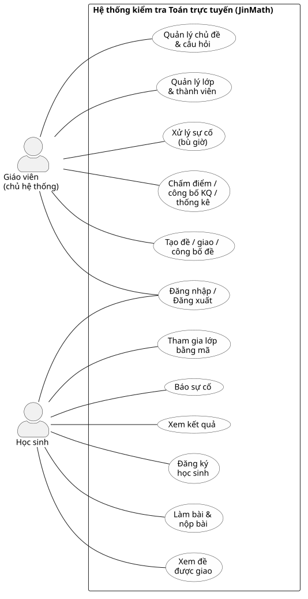
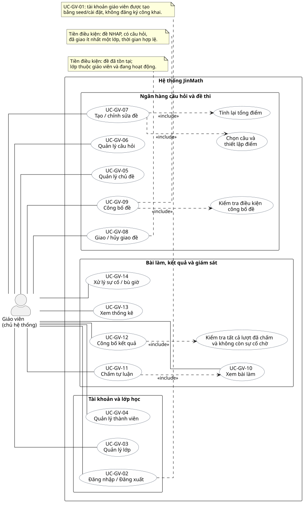
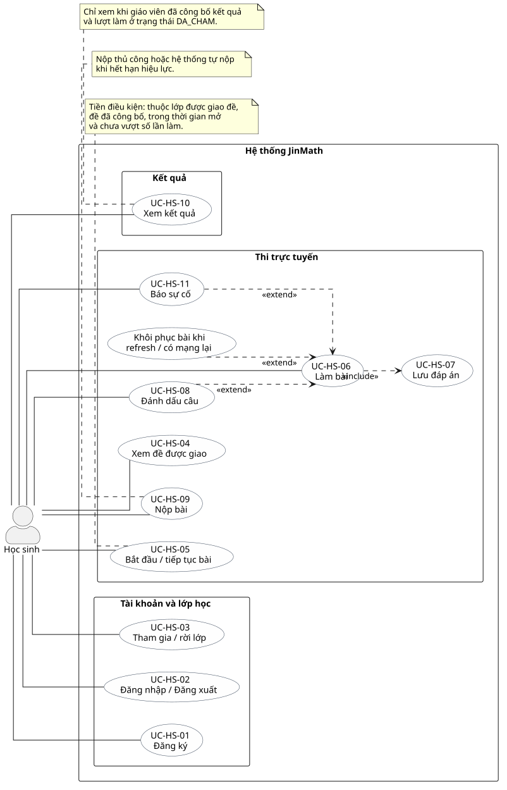
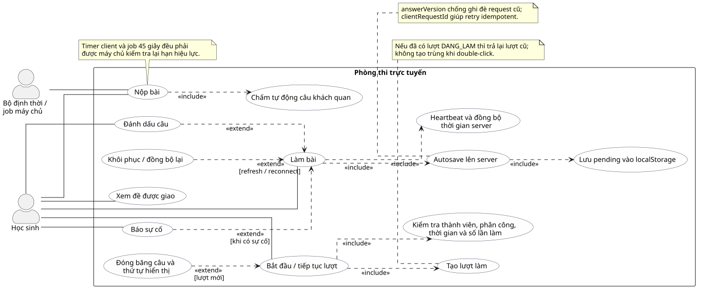

I. Bốn sơ đồ Use Case
UCD-01 — Tổng quan hệ thống

UCD-02 — Góc nhìn Giáo viên

UCD-03 — Góc nhìn Học sinh

UCD-04 — Phòng thi trực tuyến

II. Mười sơ đồ tuần tự
SD-01 — Đăng nhập (session)
sequenceDiagram
actor User as Người dùng
participant Browser as Trình duyệt
participant Ctrl as auth-controller
participant Svc as auth-service
participant Sess as session-auth
participant DB as MySQL
User->>Browser: Nhập email + mật khẩu
Browser->>Ctrl: POST /auth/login (CSRF + authLimiter)
Ctrl->>Svc: login({ email, password })
Note over Svc: email = trim().toLowerCase()
Svc->>DB: SELECT nguoi_dung WHERE email = ?
DB-->>Svc: user / null
alt Không có user
Svc-->>Ctrl: UNAUTHORIZED (401)
Ctrl-->>Browser: Flash lỗi, ở /auth/login
else trang_thai != HOAT_DONG
Svc-->>Ctrl: FORBIDDEN (403)
Ctrl-->>Browser: Flash tài khoản khóa
else Tài khoản đang hoạt động
Svc->>Svc: bcrypt.compare(password, mat_khau_hash)
alt Mật khẩu không khớp
Svc-->>Ctrl: UNAUTHORIZED (401)
Ctrl-->>Browser: Flash lỗi, không tiết lộ email tồn tại
else Mật khẩu khớp
Svc-->>Ctrl: { sessionUser, redirectTo }
Ctrl->>Sess: regenerateWithUser(req, sessionUser)
Sess->>DB: Lưu session (express-mysql-session)
alt Có returnTo nội bộ hợp lệ
Ctrl-->>Browser: 302 returnTo
else vaiTro = GIAO_VIEN
Ctrl-->>Browser: 302 /teacher/dashboard
else vaiTro = HOC_SINH
Ctrl-->>Browser: 302 /student/dashboard
end
end
end
SD-02 — Tạo đề → giao lớp → công bố đề
sequenceDiagram
actor GV as Giáo viên
participant Browser as Trình duyệt
participant Ctrl as teacher-exam-controller
participant Svc as exam-service
participant DB as MySQL
Note over GV,DB: Bước 1 — Tạo đề nháp
GV->>Browser: Form tạo đề (+ tùy chọn chọn câu)
Browser->>Ctrl: POST /teacher/exams/create (examMetaRules)
Ctrl->>Svc: createExam(giaoVienId, body)
Svc->>DB: INSERT de_thi (trang_thai=NHAP, tong_diem=0)
opt Có cauHoiIds / diemCauHoi_*
Svc->>DB: INSERT cau_hoi_de_thi
Svc->>DB: UPDATE de_thi.tong_diem
end
Svc-->>Ctrl: examId
Ctrl-->>Browser: 302 /teacher/exams/:id
Note over GV,DB: Bước 2 — Giao đề cho lớp
GV->>Browser: Chọn lớp
Browser->>Ctrl: POST /teacher/exams/:id/assign
Ctrl->>Svc: assignClass(examId, giaoVienId, lopHocId)
Svc->>DB: Kiểm tra de_thi + lop_hoc thuộc GV
alt Đề DA_HUY
Svc-->>Ctrl: EXAM_NOT_EDITABLE (422)
else Đã giao trước đó
Svc-->>Ctrl: CONFLICT (409)
else OK
Svc->>DB: INSERT phan_cong_de
Ctrl-->>Browser: Flash Đã giao đề
end
Note over GV,DB: Bước 3 — Công bố đề
GV->>Browser: Bấm Công bố đề
Browser->>Ctrl: POST /teacher/exams/:id/publish
Ctrl->>Svc: publishExam(examId, giaoVienId)
Svc->>DB: Kiểm tra NHAP, có câu, có lớp giao, tong_diem, thời gian
alt Thiếu điều kiện
Svc-->>Ctrl: VALIDATION_ERROR / EXAM_NOT_EDITABLE
Ctrl-->>Browser: Flash lỗi
else OK
Svc->>DB: UPDATE de_thi SET trang_thai=DA_CONG_BO
Note over Svc,DB: Khóa sửa cấu trúc đề
Ctrl-->>Browser: Flash đã công bố
end
SD-03 — Bắt đầu bài + đóng băng câu
sequenceDiagram
actor HS as Học sinh
participant Browser as Trình duyệt
participant Ctrl as attempt-controller
participant Svc as attempt-service
participant DB as MySQL
HS->>Browser: Bấm Bắt đầu làm bài
Browser->>Ctrl: POST /api/exams/:examId/classes/:classId/start
Note over Ctrl: requireStudent + startLimiter
Ctrl->>Svc: startAttempt(examId, classId, hocSinhId)
Svc->>DB: BEGIN + khóa de_thi / kiểm tra membership
alt Không thuộc lớp
Svc-->>Ctrl: NOT_CLASS_MEMBER (403)
else Đề chưa DA_CONG_BO
Svc-->>Ctrl: EXAM_NOT_PUBLISHED (422)
else Ngoài khung giờ / đã đóng
Svc-->>Ctrl: EXAM_TIME_NOT_OPEN / EXAM_CLOSED
else Hết số lần làm
Svc-->>Ctrl: ATTEMPT_LIMIT_REACHED (422)
else Đã có lượt DANG_LAM
Svc-->>Ctrl: 200 { attemptId, isNew:false }
else Tạo lượt mới
Svc->>Svc: han_nop = MIN(bắt đầu + thời lượng, giờ đóng đề)
Svc->>DB: INSERT luot_lam_bai (DANG_LAM)
alt tron_cau_hoi = true
Svc->>Svc: Fisher–Yates trộn thứ tự
end
Svc->>DB: INSERT cau_hoi_luot_lam (đóng băng thứ tự + điểm)
Svc->>DB: INSERT nhat_ky_thi (BAT_DAU)
Svc->>DB: COMMIT
Svc-->>Ctrl: 201 { attemptId, isNew:true }
end
Ctrl-->>Browser: JSON / redirect phòng thi
Browser-->>HS: GET /student/attempts/:attemptId
SD-04 — Autosave đáp án (`answer_version`)
sequenceDiagram
actor HS as Học sinh
participant JS as exam-room.js
participant LS as localStorage
participant Ctrl as attempt-controller
participant Svc as attempt-service
participant DB as MySQL
HS->>JS: Chọn / nhập đáp án
JS->>JS: answerVersion++
JS->>LS: math_exam_user_{uid}_attempt_{attemptId} (synced=false)
JS->>JS: Debounce + queue theo câu
JS->>Ctrl: PUT /api/attempts/:attemptId/answers/:questionId
Note over JS,Ctrl: Body: answerVersion, clientRequestId,<br/>selectedAnswerId / answerText / statementSelections
Ctrl->>Svc: saveAnswer(...)
Svc->>DB: BEGIN + FOR UPDATE luot_lam_bai
alt Không còn DANG_LAM
Svc-->>Ctrl: ATTEMPT_NOT_IN_PROGRESS (422)
else Quá han_nop_hieu_luc
Svc-->>Ctrl: DEADLINE_PASSED (422)
else answerVersion request nhỏ hơn hoặc bằng DB
Svc-->>Ctrl: OLD_ANSWER_VERSION (409)
Ctrl-->>JS: Không ghi đè
else Cùng clientRequestId + version (idempotent)
Svc-->>Ctrl: 200 OK (không ghi log mới)
Ctrl-->>JS: OK
JS->>LS: synced=true
else Hợp lệ
Svc->>DB: UPSERT chi_tiet_bai_lam
Svc->>DB: INSERT nhat_ky_thi (LUU_DAP_AN)
Svc->>DB: COMMIT
Svc-->>Ctrl: saved + answerVersion
Ctrl-->>JS: 200 OK
JS->>LS: synced=true
end
SD-05 — Khôi phục phiên (refresh / offline → online)
sequenceDiagram
actor HS as Học sinh
participant Browser as Trình duyệt
participant JS as exam-room.js
participant LS as localStorage
participant Ctrl as attempt-controller
participant Svc as attempt-service
participant DB as MySQL
HS->>Browser: F5 / mở lại phòng thi
Browser->>JS: Load /student/attempts/:attemptId
JS->>Ctrl: GET /api/attempts/:attemptId/state
Ctrl->>Svc: getState(attemptId, hocSinhId)
Svc->>DB: Đọc luot_lam_bai + cau_hoi_luot_lam + chi_tiet_bai_lam + dap_an
Note over Svc,DB: Không tạo lượt mới, không trộn lại câu<br/>Không trả la_dap_an_dung
Svc-->>Ctrl: state JSON
Ctrl-->>JS: 200 state
JS->>JS: Render câu + đáp án từ server
JS->>LS: Đọc pending
alt Lượt không còn DANG_LAM
JS->>LS: discard local
else Có pending version mới hơn server
JS->>Ctrl: PUT .../answers/:questionId (từng câu)
Ctrl->>Svc: saveAnswer (SD-04)
Svc-->>JS: OK / OLD_ANSWER_VERSION
JS->>LS: cập nhật synced
else Không pending
JS-->>HS: Trạng thái Đã lưu
end
Note over Browser,JS: window online → resyncPendingAnswers()
loop ~30 giây khi DANG_LAM
JS->>Ctrl: POST /api/attempts/:attemptId/heartbeat
Ctrl->>Svc: Cập nhật last_seen_at
end
SD-06 — Nộp bài + chấm tự động
sequenceDiagram
actor HS as Học sinh
participant JS as exam-room.js
participant Ctrl as attempt-controller
participant Svc as attempt-service
participant Job as auto-submit-job
participant DB as MySQL
alt Nộp thủ công
HS->>JS: Bấm Nộp bài
JS->>JS: Flush debounce, chờ save pending/in-flight
JS->>Ctrl: POST /api/attempts/:attemptId/submit
Note over Ctrl: requireStudent + submitLimiter
Ctrl->>Svc: submitAttempt(..., auto=false)
else Hết giờ phía client
JS->>Ctrl: POST .../submit { autoSubmit:true }
Ctrl->>Svc: submitAttempt(..., auto flag)
else Job quét quá hạn (mỗi 45 giây)
Job->>Svc: submitAttempt(..., auto=true, hocSinhId=null)
end
Svc->>DB: BEGIN + FOR UPDATE luot_lam_bai
alt trang_thai != DANG_LAM
Svc-->>Ctrl: ATTEMPT_SUBMITTED (409)
else Client auto nhưng chưa tới hạn
Svc-->>Ctrl: { submitted:false, status:DANG_LAM }
else Hợp lệ
Svc->>Svc: Chấm MOT_DAP_AN / DUNG_SAI / TRA_LOI_NGAN
Svc->>DB: UPDATE chi_tiet_bai_lam (điểm)
alt Không còn câu TU_LUAN
Svc->>DB: luot_lam_bai.trang_thai = DA_CHAM
else Nộp thủ công
Svc->>DB: trang_thai = DA_NOP
else Nộp tự động
Svc->>DB: trang_thai = TU_DONG_NOP
end
Svc->>DB: INSERT nhat_ky_thi (NOP_BAI / TU_DONG_NOP)
Svc->>DB: COMMIT
Svc-->>Ctrl: OK
Ctrl-->>JS: success
JS->>JS: removeItem localStorage
end
SD-07 — Chấm tự luận → công bố kết quả → HS xem điểm
sequenceDiagram
actor GV as Giáo viên
actor HS as Học sinh
participant Browser as Trình duyệt
participant GradeCtrl as teacher-attempt-controller
participant GradeSvc as grading-service
participant ExamCtrl as teacher-exam-controller
participant ExamSvc as exam-service
participant ResultCtrl as student-result-controller
participant ResultSvc as result-service
participant DB as MySQL
Note over GV,DB: 1) Chấm tự luận
GV->>Browser: Nhập điểm / nhận xét câu TU_LUAN
Browser->>GradeCtrl: POST /teacher/attempts/:attemptId/grade
GradeCtrl->>GradeSvc: gradeAttempt(attemptId, giaoVienId, grades)
GradeSvc->>DB: FOR UPDATE de_thi + luot_lam_bai
alt Đã công bố KQ / còn sự cố chờ / đang DANG_LAM
GradeSvc-->>GradeCtrl: CONFLICT / VALIDATION_ERROR
else OK
GradeSvc->>DB: UPSERT điểm chi_tiet_bai_lam (TU_LUAN)
opt Mọi câu tự luận đã chấm
GradeSvc->>DB: trang_thai = DA_CHAM
end
GradeCtrl-->>Browser: Flash đã lưu điểm chấm
end
Note over GV,DB: 2) Công bố kết quả
GV->>Browser: Công bố kết quả (+ tùy chọn cho xem đáp án)
Browser->>ExamCtrl: POST /teacher/exams/:id/publish-results
ExamCtrl->>ExamSvc: publishResults(examId, giaoVienId, body)
ExamSvc->>DB: Kiểm tra lượt + sự cố pending
alt Chưa đủ điều kiện
ExamSvc-->>ExamCtrl: VALIDATION_ERROR (blockers)
ExamCtrl-->>Browser: Flash lý do
else OK
ExamSvc->>DB: da_cong_bo_ket_qua=TRUE, thoi_gian_cong_bo_ket_qua=NOW()
ExamCtrl-->>Browser: Flash đã công bố
end
Note over HS,DB: 3) Học sinh xem điểm
HS->>Browser: Mở kết quả
Browser->>ResultCtrl: GET /student/results/:attemptId
ResultCtrl->>ResultSvc: getResultDetail(attemptId, hocSinhId)
alt Chưa công bố / chưa DA_CHAM
ResultSvc-->>ResultCtrl: RESULTS_NOT_PUBLISHED (422)
else OK
ResultSvc->>DB: Đọc điểm (+ dap_an nếu cho_xem_dap_an)
ResultCtrl-->>Browser: Trang chi tiết kết quả
end
SD-08 — Báo sự cố → GV duyệt bù giờ
sequenceDiagram
actor HS as Học sinh
actor GV as Giáo viên
participant Browser as Trình duyệt
participant StuCtrl as student-attempt-controller
participant TeaCtrl as teacher-incident-controller
participant Svc as incident-service
participant DB as MySQL
Note over HS,DB: 1) Học sinh báo sự cố
HS->>Browser: Chọn loại + mô tả (không nhập giây bù)
Browser->>StuCtrl: POST /student/attempts/:attemptId/incidents
Note over StuCtrl: incidentLimiter + reportIncidentRules
StuCtrl->>Svc: reportIncident(...)
Svc->>DB: BEGIN + khóa de_thi → luot_lam_bai
alt Đã công bố KQ / DA_CHAM / đã có sự cố chờ
Svc-->>StuCtrl: CONFLICT
else OK
Svc->>DB: INSERT su_co_bai_thi (CHO_XAC_NHAN)
Note over Svc: loai: MAT_DIEN, MAT_MANG, LOI_TRINH_DUYET,...
StuCtrl-->>Browser: Flash đã gửi
end
Note over GV,DB: 2) Giáo viên duyệt + bù giờ
GV->>Browser: Nhập so_giay_bu_gio (1..7200)
Browser->>TeaCtrl: POST /teacher/incidents/:id/approve
TeaCtrl->>Svc: approveIncident(id, giaoVienId, soGiayBuGio)
Svc->>DB: BEGIN + khóa de_thi → luot_lam_bai → su_co
alt Đã duyệt trước đó
Svc-->>TeaCtrl: INCIDENT_ALREADY_REVIEWED (409)
else OK
Svc->>DB: Cộng thoi_gian_bo_sung_giay (một lần)
Svc->>DB: su_co.trang_thai = DA_CHAP_NHAN
opt Lượt đang DA_NOP / TU_DONG_NOP — mở lại hợp lệ
Svc->>DB: trang_thai = DANG_LAM (reset điểm tự luận nếu cần)
Svc->>DB: INSERT nhat_ky_thi (MO_LAI_SAU_SU_CO)
end
Svc->>DB: COMMIT
Note over Svc,DB: han_nop_hieu_luc = han_nop + thoi_gian_bo_sung_giay
TeaCtrl-->>Browser: Flash đã duyệt
end
SD-09 — Học sinh tham gia lớp bằng mã
sequenceDiagram
actor HS as Học sinh
participant Browser as Trình duyệt
participant Ctrl as student-class-controller
participant Svc as class-service
participant DB as MySQL
HS->>Browser: Nhập mã lớp
Browser->>Ctrl: POST /student/classes/join (joinClassRules)
Ctrl->>Svc: joinClass(hocSinhId, maLop)
Svc->>DB: SELECT lop_hoc FOR UPDATE WHERE ma_lop = ?
alt Không có lớp
Svc-->>Ctrl: NOT_FOUND — Mã lớp không tồn tại
Ctrl-->>Browser: Flash lỗi
else trang_thai = LUU_TRU
Svc-->>Ctrl: CONFLICT — Lớp đã lưu trữ
Ctrl-->>Browser: Flash lỗi
else Đang là thành viên DANG_HOC
Svc-->>Ctrl: CONFLICT — Đã là thành viên
Ctrl-->>Browser: Flash lỗi
else Từng DA_ROI_LOP
Svc->>DB: UPDATE thanh_vien_lop SET trang_thai=DANG_HOC
Ctrl-->>Browser: 302 /student/classes
else Thành viên mới
Svc->>DB: INSERT thanh_vien_lop (DANG_HOC)
Ctrl-->>Browser: 302 /student/classes
end
SD-10 — Giáo viên tạo câu hỏi (4 loại)
sequenceDiagram
actor GV as Giáo viên
participant Browser as Trình duyệt
participant Upload as upload middleware
participant Ctrl as teacher-question-controller
participant Svc as question-service
participant DB as MySQL
GV->>Browser: Chọn loại, lớp (khoi_lop), chủ đề, nội dung (+ ảnh)
Browser->>Upload: POST /teacher/questions (multipart)
Upload->>Ctrl: file + body (sau verifyDeferredCsrf)
Ctrl->>Svc: createQuestion({ giaoVienId, body, file })
Svc->>Svc: Validate theo loai_cau_hoi
Note over Svc: MOT_DAP_AN: đúng 1 đáp án đúng<br/>DUNG_SAI: 4 mệnh đề a–d<br/>TRA_LOI_NGAN: bắt buộc dap_an_ngan_chuan<br/>TU_LUAN: không bắt buộc dap_an
alt Chủ đề không thuộc GV / dữ liệu sai
Svc->>Svc: Xóa file upload nếu có
Svc-->>Ctrl: VALIDATION_ERROR
Ctrl-->>Browser: Flash / form lỗi
else OK
Svc->>DB: BEGIN
Svc->>DB: INSERT cau_hoi (chu_de_id, khoi_lop, muc_do, anh_url...)
opt MOT_DAP_AN / DUNG_SAI
Svc->>DB: INSERT dap_an (nhiều dòng)
end
Svc->>DB: COMMIT
Svc-->>Ctrl: questionId
Ctrl-->>Browser: 302 /teacher/questions/:id
end
III. Sơ đồ phân rã chức năng
FDD-01 — Phân rã chức năng hệ thống JinMath (mức 0–2)
flowchart LR
SYS["0. HỆ THỐNG KIỂM TRA TOÁN TRỰC TUYẾN<br/>JinMath"]
SYS --> A["1. Quản lý tài khoản<br/>và xác thực"]
SYS --> B["2. Quản lý lớp học"]
SYS --> C["3. Quản lý ngân hàng<br/>câu hỏi"]
SYS --> D["4. Quản lý đề thi"]
SYS --> E["5. Tổ chức làm bài<br/>trực tuyến"]
SYS --> F["6. Chấm điểm và<br/>công bố kết quả"]
SYS --> G["7. Quản lý sự cố<br/>và bù giờ"]
SYS --> H["8. Thống kê, nhật ký<br/>và an toàn hệ thống"]
A --> A1["1.1 Đăng ký học sinh"]
A --> A2["1.2 Đăng nhập / đăng xuất"]
A --> A3["1.3 Quên và đặt lại mật khẩu"]
A --> A4["1.4 Quản lý session và phân quyền<br/>Giáo viên / Học sinh"]
B --> B1["2.1 Tạo, sửa lớp"]
B --> B2["2.2 Lưu trữ / xóa lớp"]
B --> B3["2.3 Quản lý thành viên"]
B --> B4["2.4 Tham gia lớp bằng mã"]
B --> B5["2.5 Rời lớp có kiểm tra<br/>bài đang làm"]
C --> C1["3.1 Quản lý chủ đề"]
C --> C2["3.2 Tạo / sửa / sao chép câu hỏi<br/>Một đáp án · Đúng/Sai 4 mệnh đề<br/>Trả lời ngắn · Tự luận"]
C --> C3["3.3 Phân loại khối lớp,<br/>mức độ, chủ đề"]
C --> C4["3.4 Nội dung LaTeX<br/>và hình ảnh"]
C --> C5["3.5 Bảo toàn câu hỏi<br/>đã có lịch sử thi"]
D --> D1["4.1 Tạo / sửa đề nháp"]
D --> D2["4.2 Chọn câu và<br/>thiết lập điểm"]
D --> D3["4.3 Tính tổng điểm"]
D --> D4["4.4 Giao / hủy giao<br/>đề cho lớp"]
D --> D5["4.5 Công bố đề<br/>Kiểm tra câu hỏi, lớp được giao,<br/>thời gian và tổng điểm"]
D --> D6["4.6 Hủy / xóa đề<br/>theo chính sách"]
E --> E1["5.1 Kiểm tra quyền,<br/>thời gian, số lần làm"]
E --> E2["5.2 Tạo / tiếp tục<br/>lượt làm"]
E --> E3["5.3 Đóng băng và<br/>trộn thứ tự câu"]
E --> E4["5.4 Làm bài / đánh dấu câu"]
E --> E5["5.5 Autosave lên server<br/>answerVersion chống request cũ<br/>clientRequestId đảm bảo idempotent"]
E --> E6["5.6 Lưu tạm localStorage"]
E --> E7["5.7 Khôi phục và<br/>đồng bộ khi có mạng"]
E --> E8["5.8 Heartbeat / đồng hồ<br/>theo thời gian server"]
E --> E9["5.9 Nộp thủ công /<br/>tự nộp khi hết giờ"]
F --> F1["6.1 Chấm tự động<br/>Một đáp án · Đúng/Sai theo mệnh đề<br/>Trả lời ngắn đã chuẩn hóa"]
F --> F2["6.2 Giáo viên chấm tự luận"]
F --> F3["6.3 Tính lại tổng điểm"]
F --> F4["6.4 Kiểm tra điều kiện<br/>công bố kết quả"]
F --> F5["6.5 Công bố kết quả"]
F --> F6["6.6 Học sinh xem điểm<br/>và đáp án được phép"]
G --> G1["7.1 Học sinh báo sự cố"]
G --> G2["7.2 Phát hiện gián đoạn<br/>qua heartbeat"]
G --> G3["7.3 Giáo viên duyệt / từ chối"]
G --> G4["7.4 Cộng thời gian bù"]
G --> G5["7.5 Mở lại bài đã nộp<br/>và đặt lại điểm cần thiết"]
H --> H1["8.1 Dashboard giáo viên / học sinh"]
H --> H2["8.2 Thống kê theo đề"]
H --> H3["8.3 Nhật ký sự kiện thi"]
H --> H4["8.4 CSRF và rate limit"]
H --> H5["8.5 Kiểm tra quyền sở hữu"]
H --> H6["8.6 Upload an toàn và<br/>xử lý lỗi"]
classDef root fill:#173b6c,color:#fff,stroke:#0e2748,stroke-width:2px;
classDef module fill:#dbeafe,color:#102a43,stroke:#2563eb,stroke-width:1.5px;
classDef function fill:#fff,color:#1f2937,stroke:#94a3b8;
class SYS root;
class A,B,C,D,E,F,G,H module;
class A1,A2,A3,A4,B1,B2,B3,B4,B5,C1,C2,C3,C4,C5,D1,D2,D3,D4,D5,D6,E1,E2,E3,E4,E5,E6,E7,E8,E9,F1,F2,F3,F4,F5,F6,G1,G2,G3,G4,G5,H1,H2,H3,H4,H5,H6 function;